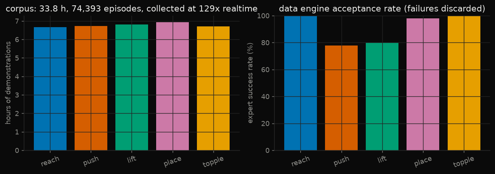
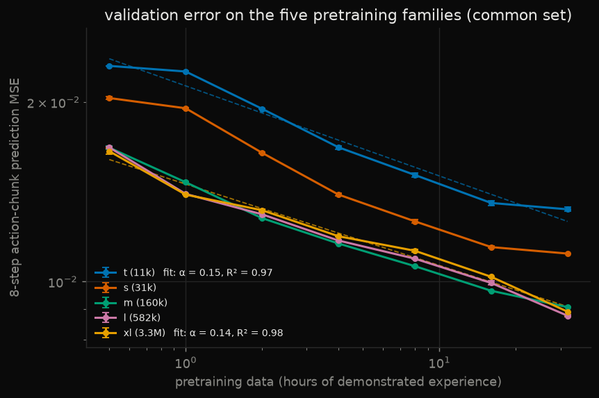
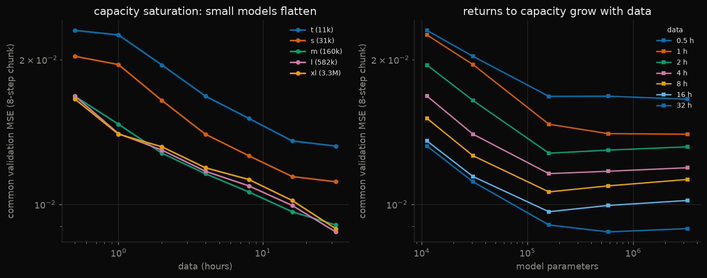
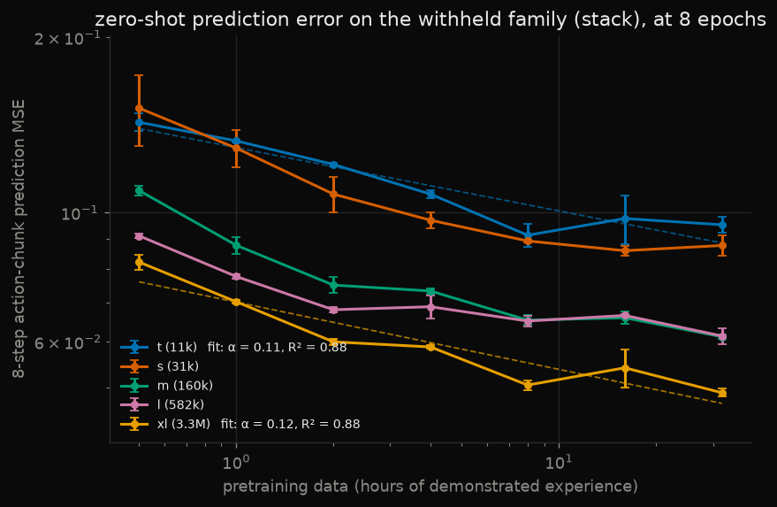
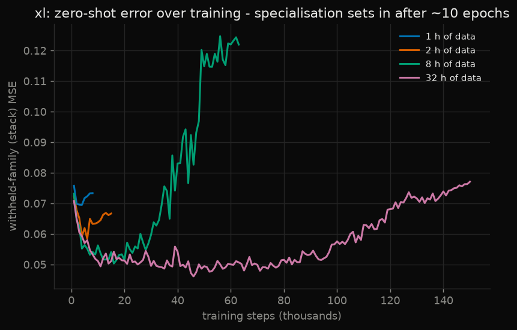
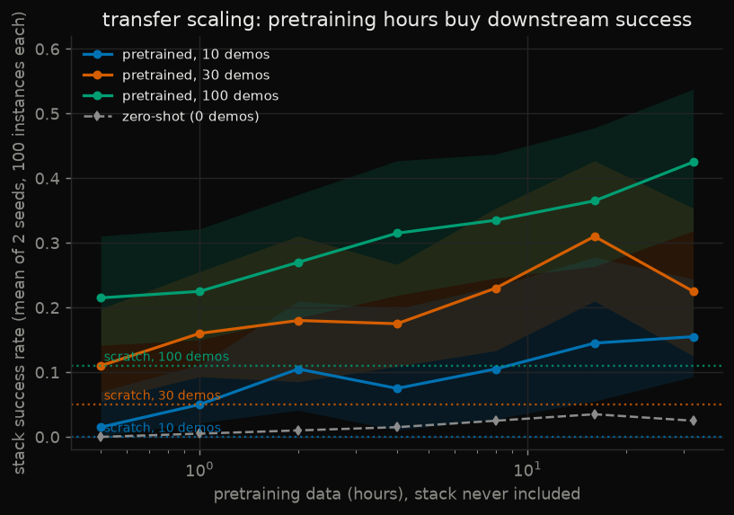
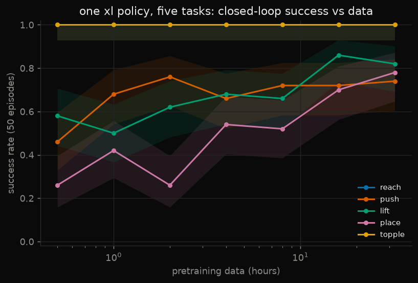

Chapter One
Scaling laws, at tabletop scale
Robot foundation models are reported to follow power laws: more pretraining data, predictably less error, and small models that stop absorbing while large ones keep going. Which of those shapes appear in a manipulation universe small enough to sweep end-to-end on one CPU — and which do not?
Generalist's GEN-0 report measured its scaling claims on 270,000 hours of real manipulation data and models past ten billion parameters. Those numbers are out of reach here. The experimental design is not: a data engine, a pretraining grid over model size and data scale, validation error on a task family the model never sees, post-training on that family with small demonstration budgets, and closed-loop evaluation with the statistics done properly. Every one of those pieces can be built honestly at small scale. This chapter builds them, and reports what they showed — including the two phenomena they did not.
The universe is a Franka Panda on a tabletop and six task families — reach, push, lift, place, topple, and stack — with every episode procedurally resampled: object sizes, masses, frictions, poses, and goals. The policy never sees the same tabletop twice. Five families form the pretraining corpus. Stack is withheld entirely. Its component skills are all in the corpus — place is already reach, grasp, carry and release into a zone — but the target is a second cube, the tolerance is tighter and the release is raised. The skills transfer; the task does not come for free, as the zero-shot numbers below show.
Twenty-eight simulator processes collect the corpus at 129 times real time: 33.8 hours of demonstrated experience, 74,393 episodes, 2.4 million control steps, in a quarter of an hour. It is stored so that cumulative hours per family stay balanced at every prefix. That detail is the whole data-scaling axis: the 1-hour dataset is literally the first hour of the 32-hour dataset, and seven nested prefixes are compared rather than seven independently sampled datasets whose sampling luck would be confounded with scale.

The grid
Five policy sizes from 11 thousand to 3.3 million parameters, roughly log-spaced, times seven data scales from half an hour to thirty-two hours, times two seeds. Seventy runs, one recipe: AdamW, warmup and cosine decay, thirty epoch-equivalents capped at 150k steps, the best checkpoint by held-in validation loss. The cap binds only at thirty-two hours, where it allows 17.6 epochs. Nothing is tuned per cell, because a scaling study's conclusions should survive a reader asking whether the small runs were simply tuned harder — and an earlier draft of this grid failed exactly that test: a minimum-step floor had quietly given the half-hour cells sixty epochs. Those cells were rerun.
Policies are MLPs predicting eight-step action chunks from a 69-dimensional state. Both are deliberate. The observation is a single state vector, not a token sequence, so attention would have nothing to attend over; and the phenomena under study — loss curves, capacity saturation, transfer — are properties of capacity against data, for which MLP width is the cleanest possible axis. Seventy training runs on a CPU is the budget that makes a sweep possible at all; a perception stack would spend it answering a different question.

What did not appear
GEN-0 describes a threshold below which models ossify — stop converting data into loss — while larger ones keep absorbing. This grid does not show it. Over the doubling from eight to sixteen hours, where every cell trains the identical recipe, all five sizes improved by almost the same fraction: between 8.7% and 11.9%. The small models' gains do shrink in the final doubling — 2.4% for the two smallest against 12% for the two largest — but that is the one doubling where the step cap binds, and the smallest models pick their best checkpoint within the last few thousand steps of the budget, still improving when cut off. Capacity saturation and training budget are confounded at exactly the point the claim would rest on, so the claim is not made. A grid this size may simply be below the threshold; it may also be that a 69-dimensional state does not contain enough to saturate eleven thousand parameters in thirty-two hours. Either way, the honest report is that the phenomenon was looked for and not found.

What the withheld family sees
Every thousand steps, each model is also scored on demonstrations of stack — a family it never trains on. That is the Figure-1 measurement of the GEN-0 report, at this scale: zero-shot prediction error on a withheld downstream task, as a function of pretraining. The number reported is the error at eight epochs of training — a rule fixed without looking at the withheld family. An earlier draft reported the minimum over training, which is an oracle choice on the test family, and one whose bias grows with data scale because longer runs are evaluated more often. It was replaced.


Does pretraining buy downstream success?
The thesis a scaling law exists to support is not about validation loss. It is that pretraining scale buys downstream performance once a model is post-trained on a little task-specific data. So each pretrained checkpoint is post-trained on ten, thirty, or one hundred stack demonstrations with one fixed recipe, and compared against the identical recipe from scratch. The comparison is paired: every arm, both seeds, faces the same hundred sampled stack instances, and what is reported is the seed-averaged per-instance difference with a bootstrap interval over those hundred instances, alongside an exact McNemar test on the discordant pairs. Twenty-one comparisons are made per model size, so a Bonferroni threshold is reported too.

The largest model tells a different story, and it is the one that makes the first credible. From scratch, its 3.3 million parameters fit a hundred demonstrations well enough for 25% success on their own, and pretraining does not significantly change that at any scale: the paired differences run from −6 to +8 points and every interval spans zero. Where the same model is starved — ten or thirty demonstrations — pretraining is worth two to fourteen and five to twenty-four points respectively, and twelve of its twenty-one comparisons are significant. Pretraining pays where data is scarce relative to capacity. An earlier draft of this paragraph reported that half an hour of pretraining made the large model significantly worse; that cell had been trained for sixty epochs by the floor bug above, and after the rerun the effect is −6 points with an interval spanning zero. It is reported here as what it is: not significant.

Plates 8 & 9 One policy, five tasks, closed loop, fifty episodes per family on the seed-0 checkpoints (a Wilson half-width of roughly twelve points, so differences between adjacent data scales are mostly inside it). At thirty-two hours the largest model succeeds on 100% of reaches, 74% of pushes, 82% of lifts, 78% of placements and 100% of topples — a mean of 87%, against 38% for the smallest model on half an hour. Right: the same policy, and a post-trained 580k sibling on the withheld stacking task, driving the simulator.
A metric that changes with the axis it is plotted against is not a metric
Each cell of the grid validated, during training, on the held-out episodes of its own data prefix — so every point on the hours axis was scored on a different set of episodes. On the committed runs, that own-prefix error still rises from sixteen to thirty-two hours for three of the five sizes; the thirty-two-hour episodes happen to be harder.
Because episodes are assigned to train or validation by a hash of their seed, a validation episode is held out from every cell regardless of scale. The union of them is a legitimate common test set for the whole grid. Re-scoring all seventy checkpoints on it — no retraining, metrics as functions of what was saved — is what Plate 3 shows, and on it every curve is monotone.
Three of the bugs below were found before the first training run
An adversarial review of the code ran before the sweep did, on the grounds that a silent bug found after seventy training runs costs seventy training runs. It found that resizing an object at reset left its collision bounding radius stale — tall pillars were settling embedded in the table with their contact flickering on one tick in five — that the sampled friction coefficients were being masked by MuJoCo's max-combination rule, and that parked objects carried stale sizes from the previous episode. All three were fixed, verified, and the corpus regenerated, before any number existed to be attached to. A second review of the finished write-up found the step floor and the oracle metric above, and softened more claims than this paragraph has room to list; the chapter is the version that survived it.
What this is and is not
This is a faithful miniature of a scaling-law study: nested data prefixes, a common validation set, a genuinely withheld task family, paired closed-loop comparison with corrected significance, Wilson intervals on success rates, and every number traceable to a committed run log. It is not a claim about what a ten-billion-parameter model does. The observations are state-based rather than pixels, the policies are MLPs, the demonstrators are scripted, two seeds are not many, and the largest model here would be a rounding error in a foundation model's parameter count. What appeared: near-straight loss curves with similar exponents across a 290× range of model size, specialisation away from an unseen task within the first fifteen passes over the data, and pretraining that buys downstream success where demonstrations are scarce relative to capacity. What did not: an ossification threshold, or any return to capacity past 160k parameters between two and sixteen hours of data. Both halves of that list are the result.